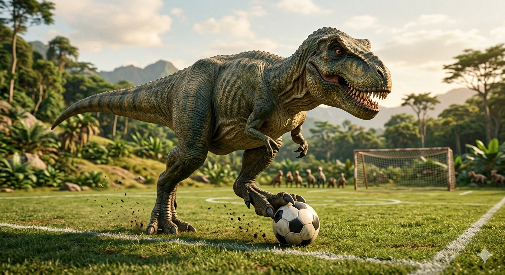

Welcome to the world of MIX & MATCH, where dinosaurs and soccer collide in a whimsical adventure! In this website, you'll explore a unique universe where prehistoric creatures and modern sports intersect in the most delightful ways.

Discover how dinosaurs would play soccer, what their favorite teams might be, and how they would interact with the sport. From T-Rex strikers to Velociraptor midfielders, the possibilities are endless!